分组密码的模式
我们在上一章中介绍的DES和AES都属于分组密码，它们只能加密固定长度的明文。如果需要加密任意长度的明文，就需要对分组密码进行迭代，而分组密码的迭代方法就称为分组密码的“模式”。
分组密码有很多种模式，如果模式的选择不恰当，就无法保证机密性。例如，如果使用ECB模式，明文中的一些规律就可以通过密文被识别出来。
分组密码的主要模式（ECB、CBC、CFB、OFB、CTR），最后再来考察一下到底应该使用哪一种模式。
3.1 分组密码
分组密码（blockcipher）是每次只能处理特定长度的一块数据的一类密码算法，这里的一块”就称为分组（block）。此外，一个分组的比特数就称为分组长度（blocklength）。
例如，DES和三重DES的分组长度都是64比特。这些密码算法一次只能加密64比特的明文．并生成64比特的密文。
AES的分组长度可以从128比特、192比特和256比特中进行选择。当选择128比特的分组长度时，AES一次可加密128比特的明文，并生成128比特的密文。
3.2 模式
分组密码算法只能加密固定长度的分组，但是我们需要加密的明文长度可能会超过分组密码的分组长度，这时就需要对分组密码算法进行迭代，以便将一段很长的明文全部加密。而迭代的方法就称为分组密码的模式（mode）。
话说到这里，很多读者可能会说：“如果明文很长的话，将明文分割成若干个分组再逐个加密不就好了吗？”事实上可没有那么简单。将明文分割成多个分组并逐个加密的方法称为ECB模式，这种模式具有很大的弱点（稍后讲解）。对密码不是很了解的程序员在编写加密软件时经常会使用ECB模式，但这样做会在不经意间产生安全漏洞，因此大家要记住千万不能使用ECB模式。
模式有很多种类，分组密码的主要模式有以下5种：
- ECB模式：Electronic Code Book mode（电子密码本模式）
- CBC模式：Cipher Block Chaining mode（密码分组链接模式）
- CFB模式：Cipher FeedBack mode（密文反馈模式）
- OFB模式：Output FeedBack mode（输出反馈模式）
- CTR模式：CounTeR mode（计数器模式）
明文分组和密文分组
在介绍模式之前，我们先来学习两个术语。
*明文分组: *是指分组密码算法中作为加密对象的明文。明文分组的长度与分组密码算法的分组长度是相等的。
*密文分组: *是指使用分组密码算法将明文分组加密之后所生成的密文。
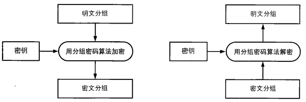
为了避免图示变得复杂，以后我们将“用分组密码算法加密”简写为“加密”，并省略对密钥的描述。
3.3 ECB 模式
ECB(Electronic Code Book, 电子密码本)模式是最简单的加密模式，明文消息被分成固定大小的块（分组），并且每个块被单独加密。 每个块的加密和解密都是独立的，且使用相同的方法进行加密，所以可以进行并行计算，但是这种方法一旦有一个块被破解，使用相同的方法可以解密所有的明文数据，安全性比较差。 适用于数据较少的情形，加密前需要把明文数据填充到块大小的整倍数。


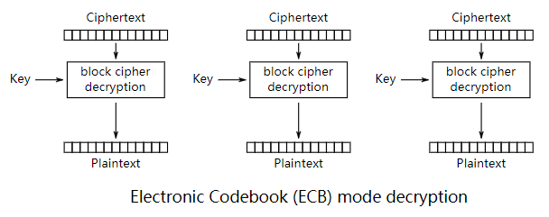
使用ECB模式加密时，相同的明文分组会被转换为相同的密文分组，也就是说，我们可以将其理解为是一个巨大的“明文分组–>密文分组”的对应表，因此ECB模式也称为电子密码本模式当最后一个明文分组的内容小于分组长度时，需要用一特定的数据进行填充（padding），让值一个分组长度等于分组长度。
ECB模式是所有模式中最简单的一种。ECB模式中，明文分组与密文分组是一一对应的关系，因此，如果明文中存在多个相同的明文分组，则这些明文分组最终都将被转换为相同的密文分组。这样一来，只要观察一下密文，就可以知道明文中存在怎样的重复组合，并可以以此为线索来破译密码，因此ECB模式是存在一定风险的。
3.3 CBC模式
XOR
为了让大家理解比特序列运算的概念，我们来介绍一下XOR运算。XOR的全称是exclusive or，在中文里叫作异或。尽管名字看起来很复杂，但这种运算本身一点都不难。
1个比特（bit）的位运算规则如下：

如果将0理解为偶数， 1理解为奇数，就可以将XOR和一般的加法运算等同起来。
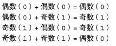
由于XOR和加法运算很相似，因此一般用+和O组合而成的符号⊕来表示XOR。
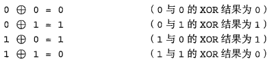
为了更加直观地理解XOR，大家可以想象一下黑白棋（奥赛罗棋）中的棋子。
将一个棋子保持原状（不翻转）看做0
将一个棋子翻转到另一面看做1
那么XOR运算就相当于将黑白棋的一个棋子进行翻转的操作。

通过上述场景，大家应该能够理解这样一个规律，即两个相同的数进行XOR运算的结果一定为0，因为棋子翻转两次和一次都没有翻转的结果是一样的。
上面我们介绍了1个比特之间的XOR运算，而如果是长比特序列之间的运算，则只要对其中每个相对应的比特进行XOR运算就可以了。假设我们将01001100这个比特序列称为A，将10101010这个比特序列称为B，那么A与B的XOR运算就可以像下面这样逐一对各个比特进行计算。和加法运算不同的是，XOR中不需要进位。

由于两个相同的数进行XOR运算的结果一定为0，因此如果将A⊕B的结果再与B进行XOR运算，则结果会变回A。也就是说，两个公式中的B会相互抵消。

可能大家已经发现了，上面的计算和加密、解密的步骤非常相似。
将明文A用密钥B进行加密，得到密文A⊕B
将密文A⊕B用密钥B进行解密，得到明文A
实际上，只要选择一个合适的B，仅仅使用XOR就可以实现一个高强度的密码。
对同一个比特序列进行两次XOR之后就会回到最初的状态。
CBC模式
CBC(Cipher Block Chaining, 密码块链)模式中每一个分组要先和前一个分组加密后的数据进行XOR异或操作，然后再进行加密。 这样每个密文块依赖该块之前的所有明文块，为了保持每条消息都具有唯一性，第一个数据块进行加密之前需要用初始化向量IV进行异或操作。 CBC模式是一种最常用的加密模式，它主要缺点是加密是连续的，不能并行处理，并且与ECB一样消息块必须填充到块大小的整倍数。

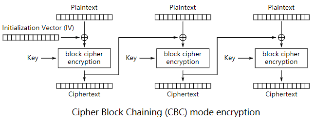

如果将一个分组的加密过程分离出来，我们就可以很容易地比较出ECB模式和CBC模式的区别 。ECB模式只进行了加密，而CBC模式则在加密之前进行了一次XOR。
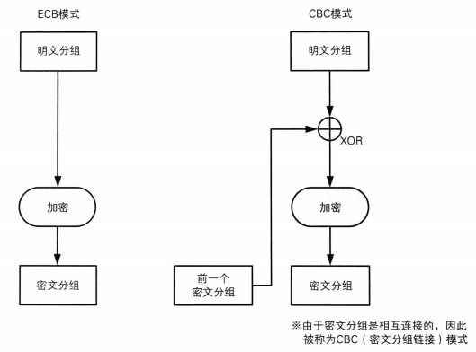
初始化向量
当加密第一个明文分组时，由于不存在“前一个密文分组”，因此需要事先准备一个长度为一个分组的比特序列来代替“前一个密文分组“，这个比特序列称为初始化向量（initialization vector）
通常缩写为 IV 一般来说，每次加密时都会随机产生一个不同的比特序列来作为初始化向量。
明文分组在加密之前一定会与“前一个密文分组”进行 XOR 运算，因此即便明文分组1和2的值是相等的，密文分组1和2的值也不一定是相等的。这样一来，ECB模式的缺陷在CBC模式中就不存在了。
3.4 CFB 模式
CFB模式的全称是Cipher FeedBack模式（密文反馈模式）。在CFB模式中，前一个分组的密文加密后和当前分组的明文XOR异或操作生成当前分组的密文。
所谓反馈，这里指的就是返回输人端的意思，即前一个密文分组会被送回到密码算法的输入端。
CFB模式的解密和CBC模式的加密在流程上其实是非常相似的。
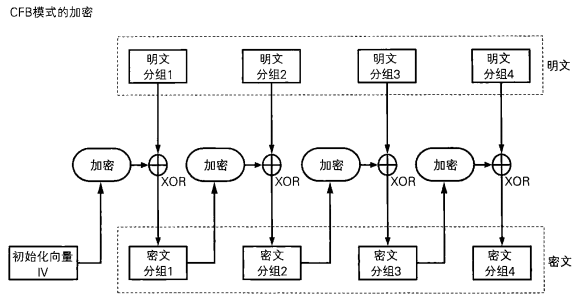
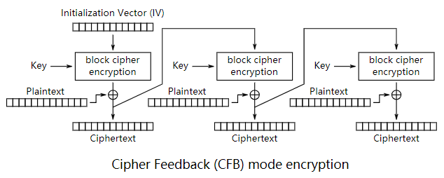

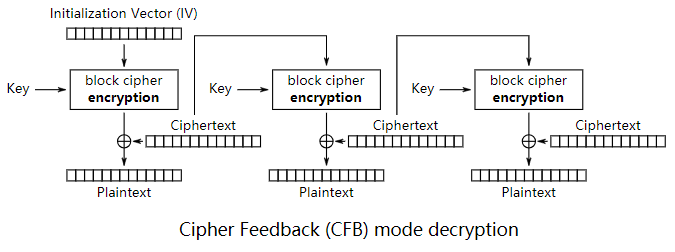
在ECB模式和CBC模式中，明文分组都是通过密码算法进行加密的，然而，在CFB模式中，明文分组并没有通过密码算法来直接进行加密。
从上图可以看出，明文分组和密文分组之间并没有经过”加密”这一步骤。在CFB模式中，明文分和密文分组之间只有一个XOR。
我们将CBC模式与CFB模式对比一下，就可以看出其中的差异了（如下图）。在CBC模式中，明文分组和密文分组之间有XOR和密码算法两个步骤，而在CFB模式中，明文分组和密文分组之间则只有XOR。

初始化向量
在生成第一个密文分组时，由于不存在前一个输出的数据，因此需要使用初始化向量（IV）来代替，这一点和CBC模式是相同的。一般来说，我们需要在每次加密时生成一个不同的随机比特序列用作初始化向量。
CFB模式与流密码
CFB模式是通过将“明文分组”与“密码算法的输出”进行XOR运算来生成“密文分组”的。
在CFB模式中，密码算法的输出相当于一个随机比特序列。由于密码算法的输出是通过计算得到的，并不是真正的随机数，因此CFB模式不可能具各理论上不可破译的性质。
CFB模式中由密算法所生成的比特序列称为密钥流（key stream）。在CFB模式中，密码算法就相当于用来生成密钥流的伪随机数生成器，而初始化向量相当于伪随机数生成器的“种子“。
在CFB模式中，明文数据可以被逐比特加密，因此我们可以将CFB模式看做是一种使用分组密码来实现流密码的方式。
3.5 OFB 模式
OFB式的全称是Output-Feedback模式（输出反馈模式）。在OFB模式中，密码算法的输出会反馈到密码算法的输入中， 即上一个分组密码算法的输出是当前分组密码算法的输入（下图）。
OFB模式并不是通过密码算法对明文直接进行加密的，而是通过将 “明文分组” 和 “密码算法的输出” 进行XOR来产生 “密文分组” 的，在这一点上OFB模式和CFB模式非常相似。
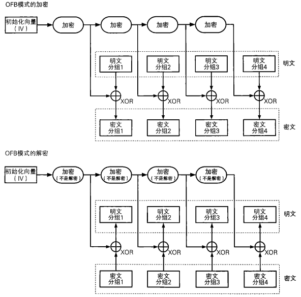
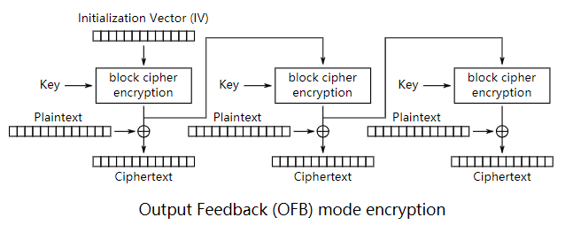
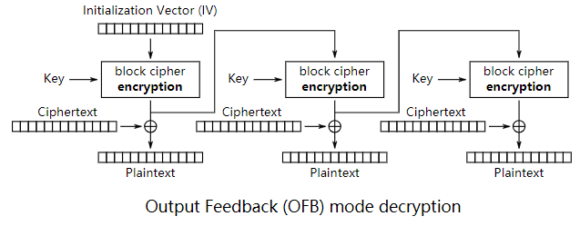
初始化向量
和CBC模式、CFB模式一样，OFB模式中也需要使用初始化向量（IV）。一般来说，我们需要在每次加密时生成一个不同的随机比特序列用作初始化向量。
CFB模式和OFB模式对比
OFB模式和CFB模式的区别仅仅在于密码算法的输入。
CFB式中，密码算法的输人是前一个密文分组，也就是将密文分组反馈到密算法中，因此就有了“密文反馈模式”这个名字。
相对地，OFB模式中，密码算法的输入则是密码算法的前一个输出，也就是将输出反馈给密码算法，因此就有了“输出反馈模式”这个名字。
如果将一个分组抽出来对CFB模式和OFB模式进行一个对比．就可以很容易看出它们之间的差异（下图）。
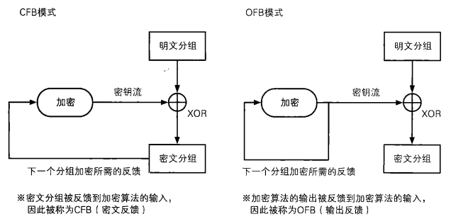
由于CFB模式中是对密文分组进行反馈的，因此必须从第一个明文分组开始按顺序进行加密，也就是说无法跳过明文分组1而先对明文分组2进行加密。
相对地，在OFB模式中，XOR所需要的比特序列（密钥流）可以事先通过密码算法生成，和明文分组无关。只要提前准备好所需的密钥流，则在实际从明文生成密文的过程中，就完全不需要动用密码算法了。只要将明文与密钥流进行XOR就可以了。和AES等密码算法相比，XOR运算的速度是非常快的。这就意味着只要提前准备好密钥流就可以快速完成加密。换个角度来看，生成密钥流的操作和进行XOR运算的操作是可以并行的。
3.6 CTR 模式
CTR模式的全称是CounTeR模式（计数器模式）。CTR摸式是一种通过将逐次累加的计数器进行加密来生成密钥流的流密码（下图）。
CTR模式中，每个分组对应一个逐次累加的计数器，并通过对计数器进行加密来生成密钥流。也就是说，最终的密文分组是通过将计数器加密得到的比特序列，与明文分组进行XOR而得到的。

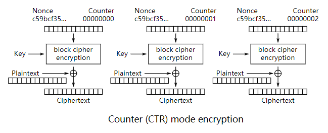

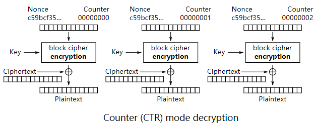
计数器的生成方法
每次加密时都会生成一个不同的值（nonce）来作为计数器的初始值。当分组长度为128比特（16字节）时，计数器的初始值可能是像下面这样的形式。
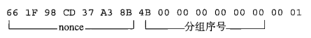
其中前8个字节为nonce（随机数），这个值在每次加密时必须都是不同的，后8个字节为分组序号，这个部分是会逐次累加的。在加密的过程中，计数器的值会产生如下变化：

按照上述生成方法，可以保证计数器的值每次都不同。由于计数器的值每次都不同，因此每个分组中将计数器进行加密所得到的密钥流也是不同的。也是说，这种方法就是用分组密码来模拟生成随机的比特序列。
OFB模式与CTR模式对比
CTR模式和OFB模式一样，都属于流密码。如果我们将单个分组的加密过程拿出来，那么OFB模式和CTR模式之间的差异还是很容易理解的（下图）。OFB模式是将加密的输出反愦到输入，而CTR模式则是将计数器的值用作输入。

CTR模式的特点
CTR模式的加密和解密使用了完全相同的结构，因此在程序实现上比较容易。这一特点和同为流密码的OFB模式是一样的。
此外，CTR模式中可以以任意顺序对分组进行加密和解密，因此在加密和解密时需要用到的“计数器”的值可以由nonce和分组序号直接计算出来。这一性质是OFB模式所不具备的。
能够以任意顺序处理分组，就意味着能够实现并行计算。在支持并行计算的系统中，CTR模式的速度是非常快的。
3.7 总结
我们已经介绍了ECB、CBC、CFB、OFB和CTR模式，下面我们对这些模式的特点做一下整理。